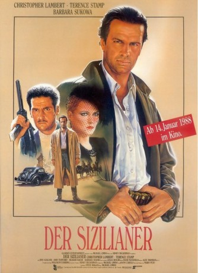
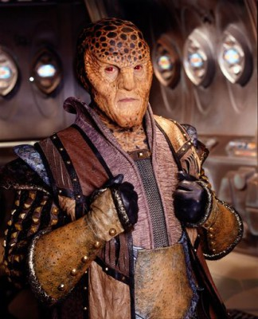
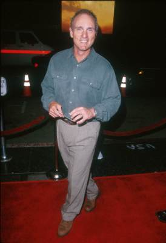
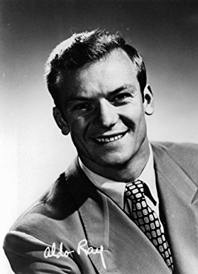

#7057 Der Sizilianer
Alternativ: The Sicilian
 
 IMDB-Wertung: 5.3 / 10
IMDB-Wertung: 5.3 / 10  Metascore: 0
Metascore: 0 
Der sizilianische Volksheld Salvatore Giuliano kämpft einen blutigen Befreiungsfeldzug gegen Polizei, Mafia, Kirche und Adel. Er befreit Verbrecher aus dem Gefängnis und beraubt Gutsbesitzer, um das Geld den Bauern zu schenken. Sein Ziel ist die Unabhängigkeit Siziliens. Schon bald wird er vom Volk als italienischer "Robin Hood" gefeiert. Die Polizei ist machtlos und die Staatsmacht findet gegen Giuliano keine Handhabe. Aber dennoch ist er nicht außer Gefahr - seine Feinde lauern überall und warten nur auf einen kleinen Fehler, um ihn vom Thron zu stoßen...
Jahr: 1987
Dauer: 140 Minuten
FSK: 16
Land: USA Studio: 20th Century FoxTonspuren: DD5.1 - ,
Untertitel:
Auflösung: 1080p (1920x816) Größe: 10649 MB
Genre: Action, Drama, Krimi
Regisseur: Michael Cimino
Drehbuch: Mario Puzo
Soundtrack:
Darsteller:
 Christopher Lambert als Salvatore Giuliano
Christopher Lambert als Salvatore Giuliano Terence Stamp als Prince Borsa
Terence Stamp als Prince Borsa Joss Ackland als Don Masino Croce
Joss Ackland als Don Masino Croce John Turturro als Pisciotta
John Turturro als Pisciotta Barbara Sukowa als Camilla, Duchess of Crotone
Barbara Sukowa als Camilla, Duchess of Crotone- Giulia Boschi als Giovanna Ferra
- Ray McAnally als Trezza
- Barry Miller als Dr. Nattore
-  Andreas Katsulas als Passatempa
 Michael Wincott als Cpl. Silvestro Canio
Michael Wincott als Cpl. Silvestro Canio Ramon Bieri als Quintana
Ramon Bieri als Quintana- Stanko Molnar als Silvio Ferra
 Oliver Cotton als Cmdr. Roccofino
Oliver Cotton als Cmdr. Roccofino-  Joe Regalbuto als Father Doldana
-  Aldo Ray als Don Siano of Bisacquino
- Richard Bauer als Hector Adonis
- Derrick Branche als Terranova
- Richard Venture als Cardinal of Palermo
- Tom Signorelli als Abbot Manfredi
- Nicholas Kepros als University President
- Justin Clark als Boy
- Trevor Ray als Frisella, the barber
- Barone Giovanni Gagliardo Di Carpinello als Don Pidou of Caltanisetta
- Guglielmo Inglese als Don Arzana of Plani dei Greci
- Don Luciano Cappucino als Don Marcuzzi of Vallamira
- Anita Laurenzi als Mrs. Frisella
- Agostino Trupia als Young Frisella
 Massimo Sarchielli als Enzo
Massimo Sarchielli als Enzo- Emanuella Torri als Maid
- Riccardo De Torrebruna als Adjutant
- Gaspare Canzoneri als Prison Doctor
- Barone Francesco Agnello als Ancient Nobleman
- Geoffrey Copleston als Pathe Journalist
- Claudio Collovà als Barracks Policeman
- Tony Sperandeo als Barracks Policeman
- Marino Matranga als Col. Amato
- Accursio Di Leo als Valet
- Leonardo Treviglio als Policeman in Wheatfields
- Franco Trevisi als Policeman in Wheatfields
- Danilo Mattei als Lieutenant
- Carlo Pavone als Doctor in Emergency Clinic
- Enrico Stassi als Father
- Chiara Carrafa als Little Girl
- Francesco Plaia als Giuliano's Man
- Isidoro Passanante als Giuliano's Man
- Leonardo Plaia als Giuliano's Man
- Matteo Ingrao als Giuliano's Man
- Vito Ingoglia als Giuliano's Man
- Gaspare Mirrione als Giuliano's Man
- Carmelo Anello als Giuliano's Man
Datei: X:\1987\Sizilianer, Der (1987, FSK16, 1920x816).mkv seit 21.09.2017
Festplatte: HD 1987-1991
 Es gibt insgesamt 50 Filme in der Gruppe '1987'
Es gibt insgesamt 50 Filme in der Gruppe '1987'